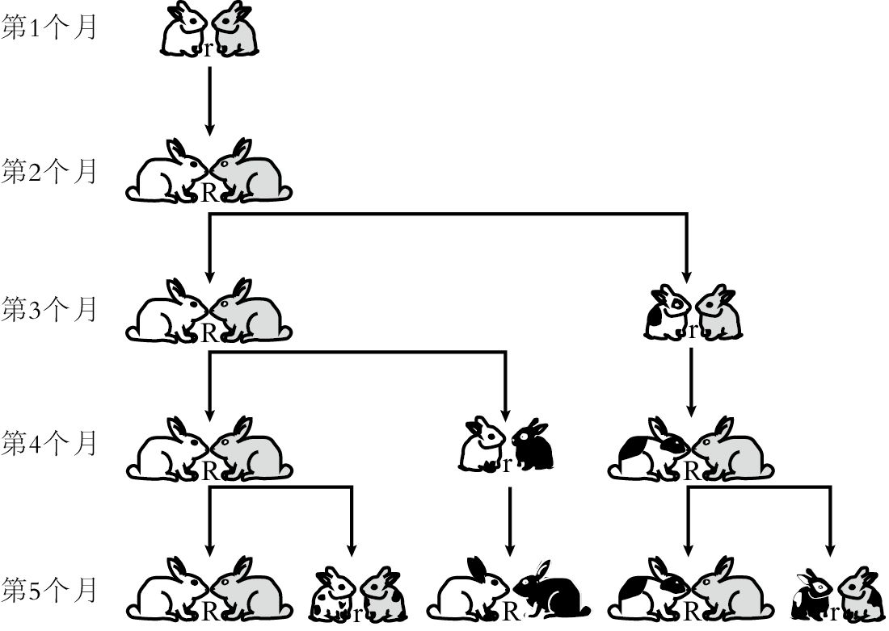
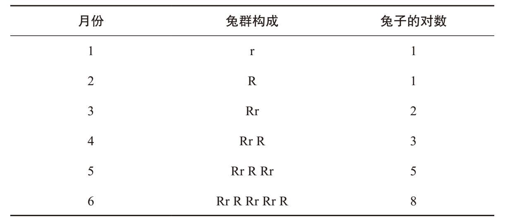
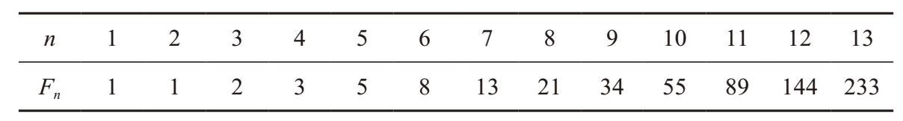
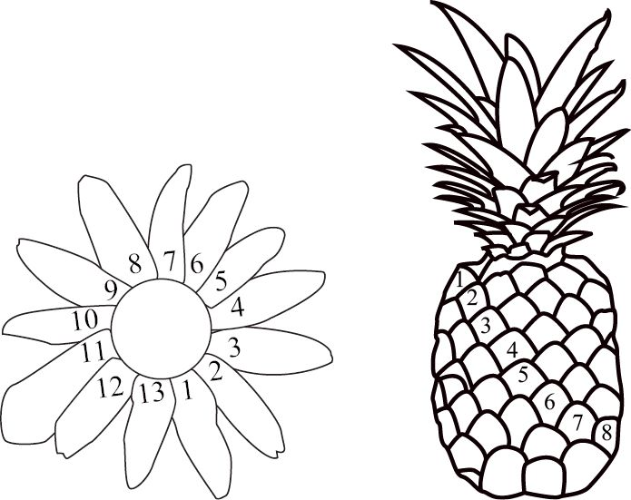
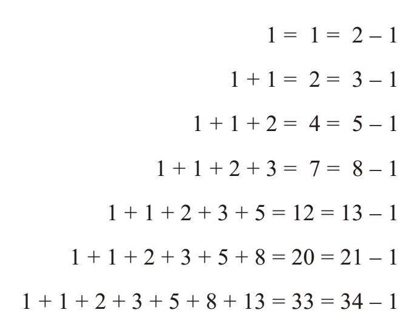
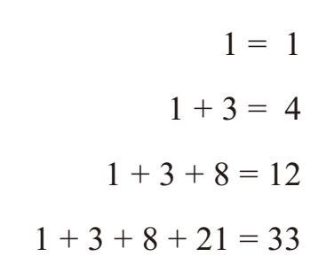
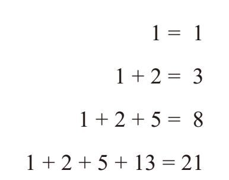

请大家认真观察最奇妙的数列之一——斐波那契数列。
1，1，2，3，5，8，13，21，34，55，89，144，233 …
斐波那契数列的前两项分别是1、1，第3项是1 + 1 = 2（第1项和第2项之和），第4项是1 + 2 = 3（第2项和第3项之和），第5项是2 + 3 = 5（第3项和第4项之和），之后的各项依次是3 + 5 = 8，5 + 8 = 13，8 + 13 = 21…。1202年，比萨的利奥纳多（后被人称为“斐波那契”）在其著作《算盘书》（Liber Abaci）中第一次介绍了这些数字。这部著作不仅把阿拉伯—印度数字系统引入了欧洲国家，还为西方世界创立了沿用至今的计算方法。
这部著作论述了很多计算问题，其中有一个有趣的“兔子问题”：假设兔子永远不会死，小兔子长大需要1个月，然后每个月生一对小兔子；如果一开始的时候有一对小兔子，那么12个月之后共有多少对兔子？
我们可以用图形或者符号来呈现这个问题。用小写字母“r”表示一对小兔子，用大写字母“R”表示成年兔子。每个小写的“r”到下一个月就会变成大写的“R”，大写的“R”则变成“Rr”。（也就是说，小兔子长成大兔子，大兔子生下小兔子。）

我们利用下表对问题建模。我们发现，在前6个月里，兔子的对数分别是1、1、2、3、5、8。

我们在不具体列出兔群构成的情况下，可以证明到第7个月时有13对兔子。那么，其中有多少对成年兔子呢？由于第6个月的所有兔子到第7个月时都是成年兔子，因此第7个月有8对成年兔子。
第7个月又有多少对小兔子呢？它在数量上等于第6个月的成年兔子的对数，即5对（与第5个月时的兔子总数必然相等）。因此，第7个月的兔子对数为8 + 5 = 13。
如果把斐波那契数列的前两项分别定义为F1 = 1，F2 = 1，随后各项分别为其前面两个数字之和，那么，对于n≥3，有：
Fn = Fn–1 + Fn–2
如下表所示，F3 = 2, F4 = 3, F5 = 5, F6 = 8，以此类推。

因此，前文中兔子问题的答案是F13 = 233（包含F12 = 144对成年兔子和F11 = 89对小兔子）。
除了研究人口动态以外，斐波那契数列还有无数其他应用，而且我们经常可以在自然界中发现它的踪影。例如，花朵的花瓣数常常是斐波那契数列中的一个数字，向日葵、菠萝、松球等的螺旋结构中也常常含有斐波那契数列中的数字。但是，最让我沉醉不已的是斐波那契数列表现出来的那些美丽动人的规律。

例如，我们把斐波那契数列的前几个数字相加，看看它们的和有什么特点。

这些和大多不是斐波那契数列中的数字，但却非常接近。事实上，这些和分别比斐波那契数列小1。下面，我们来看看其中的奥秘。以最后一个等式为例，我们把每个数字改写成其后两个数字之差的形式，上式就会变成：
1 + 1 + 2 + 3 + 5 + 8 + 13
=(2 – 1) + (3 – 2) + (5 – 3) + (8 – 5) + (13 – 8) + (21 – 13) + (34 – 21)
= 34 – 1
请注意观察，(2 – 1)中的2会被(3 – 2)中的2抵消，(3 – 2)中的3会被(5 – 3)中的3抵消，最终，除了最后一项中的34和第1项中的（–1）以外，所有项均相互抵消了。一般而言，斐波那契数列的前n个数字相加有一个非常简单的求和公式：
F1 + F2 + F3 + … + Fn = Fn+2 –1
下面我再向大家介绍一个与之相关、答案同样美丽简练的问题。如果将斐波那契数列的前n个偶数项数字相加，它们的和有什么特征？也就是说，下面这个求和算式可以简化吗？
F2 + F4 + F6 + … + F2n
先观察前几个偶数项的数字之和：

注意，这些数字看上去非常眼熟。事实上，这些数字在前面求斐波那契数列的前n个数字之和时出现过，所有的数字都比斐波那契数列小1。考虑到斐波那契数列的每个数字都是其前两项相加之和，因此，在第一项之后，我们可以把每个偶数项的数字替换成其前两个数字之和。从下面的算式可以看出，这个问题实际上已经变成了上面的那个求和问题：
1 + 3 + 8 + 21
= 1 + (1+2) + (3 + 5) + (8 + 13)
= 34–1
最后一行符合前n项斐波那契数列之和的特征：前7个数字的和比第9个数字小1。
一般而言，鉴于F2 = F1 = 1，且每个数字都是前两项之和，因此我们可以把偶数项数字的求和问题变成前2n – 1个数字的求和问题。
F2 + F4 + F6 + … + F2n
= F1 + (F2 + F3) + (F4 + F5) + … + (F2n – 2 + F2n – 1 )
= F2n+1 – 1
接下来，我们再研究前n个奇数项的数字之和。

这些和表现出更明显的规律：前n个奇数项的数字之和就是下一个数字。利用上面的方法，我们可以得到：
F1 + F3 + F5 + … + F2n–1
= 1 + (F1 + F2) + (F3 + F4) + … + (F2n – 3 + F2n – 2 )
= 1 + ( F2n–1)
= F2n
我们还可以换一种证明方法，得出相同的结果。如果从斐波那契数列的前2n个数字之和中减去前n个偶数项数字之和，就会得到前n个奇数项数字之和：
F1 + F3 + F5 + … + F2n–1
= (F1 + F2 + … + F2n–1) – (F2 + F4 + … + F2n–2)
= (F2n + 1 – 1) – (F2n – 1 – 1)
= F2n